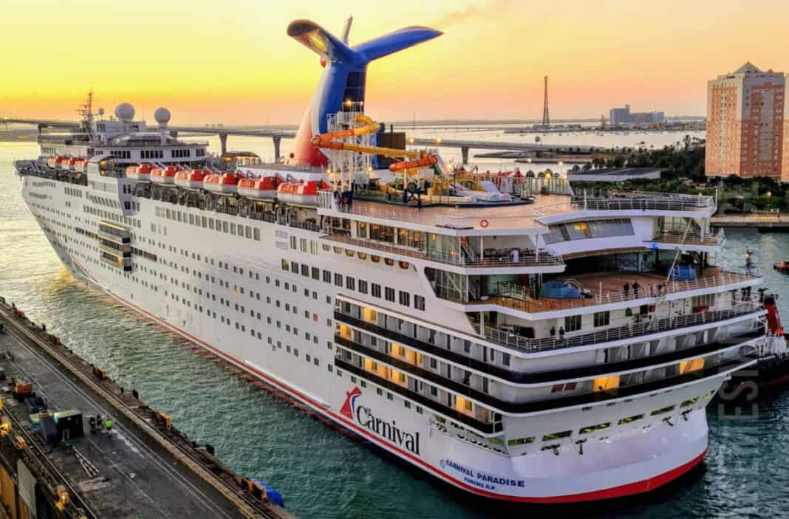

I have been traveling since I was a child.

First cruise I was on was on the the carnival cruise line when I was 5 years old
With my very explorative parent, I was able to stop and explore almost every state on the east coastline. We would take a winter trip almost every year to visit a new state that had a snowy winter.
Towards the end of my middle school age, I was able to travel with many family members to Quebec, Canada; we also traveled further north to explore the mountains of the far northeast and go snowboarding.
In my younger years, travel was always at the center of my family's curiosity—it wasn’t just something I enjoyed, it was something I felt drawn to. Over time, I started gravitating toward the idea of traveling on my own. There’s something powerful about navigating new places solo, learning as you go, and really connecting with where you are without distractions. So far, that mindset has taken me on cross-country road trips, deep into the landscapes and cultures of South America, the vibrant streets of Japan, and the historic charm of Spain. Each place has left its mark on me, especially through the food. Tasting dishes that are deeply tied to a region’s identity has become one of my favorite parts of exploring. Whether it's street food in Tokyo, homemade empanadas in a small town in Colombia, or tapas shared with locals in Madrid, I’ve found that food tells stories words sometimes can’t. Looking ahead, I know I’ve only scratched the surface. There’s so much more of the world I want to experience; its flavors, people, and everyday moments that make travel feel truly alive.
When planning a trip, it helps to start by thinking about what kind of experience you're looking for, whether it’s exploring history, relaxing in nature, or trying something adventurous. Once you have a clear idea, look up information on official tourism sites to get a feel for the top things to see and any important travel tips. Blogs and forums written by recent travelers can give you honest, up-to-date advice and little details that guidebooks might miss. It’s also smart to look at a map and figure out how to get around; whether it's by public transport, walking, or renting a bike. Learning a bit about the local customs and culture can go a long way, especially in helping you connect with people and avoid awkward situations. Check if there are any festivals or local events happening during your visit; they can be a fun way to experience the local vibe, but they might also affect crowds or opening hours. Lastly, don’t forget to look at the weather forecast so you can pack what you really need. Doing a bit of thoughtful research makes the whole trip feel more relaxed and enjoyable.
Budget is definitely one of the most important things to consider. Go to this budget calculator to get a beginning reference of what you need.
Staying on a budget while traveling is all about being smart with your choices. Skip expensive hotels and try hostels, guesthouses, or even Couchsurfing for free stays and local connections. Booking in advance or during off-peak seasons can get you better rates. Look for places with kitchen access so you can cook your own meals; it saves money and lets you try local ingredients. Shared rooms or dorms are cheaper and a great way to meet other travelers. Use apps to find last-minute deals or discounts. Comfort is nice, but with budget stays, you often gain richer, more authentic experiences.